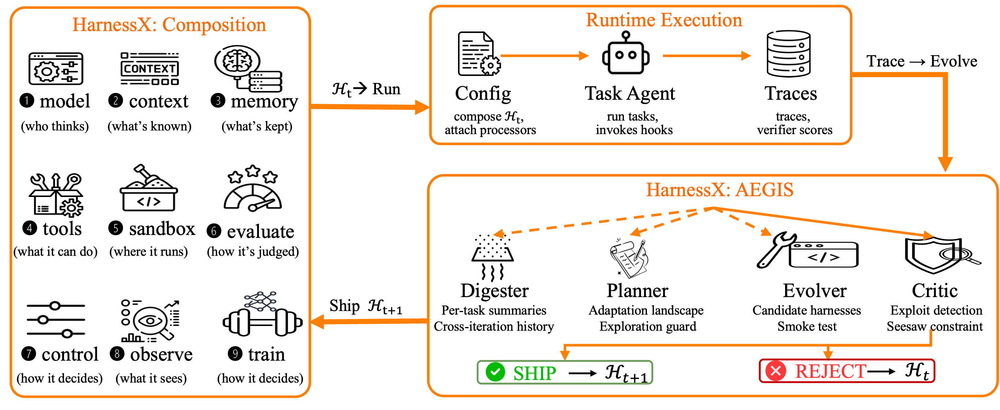
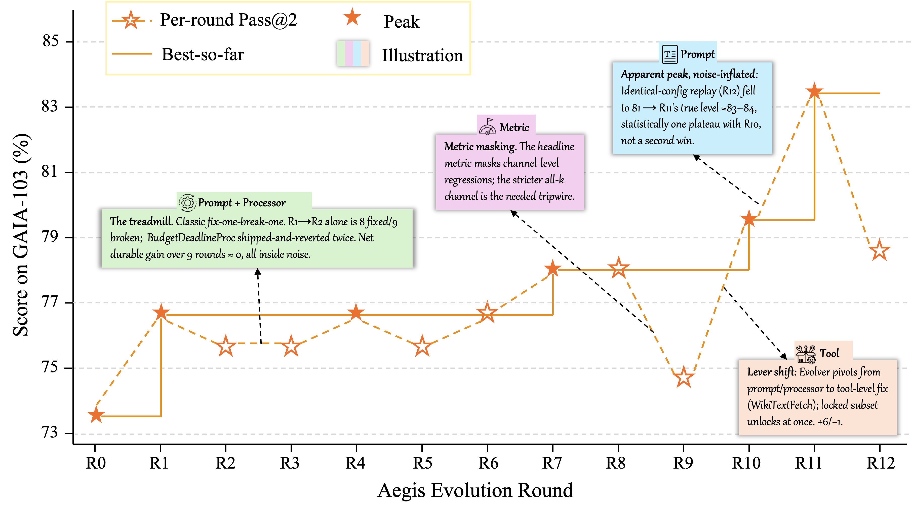
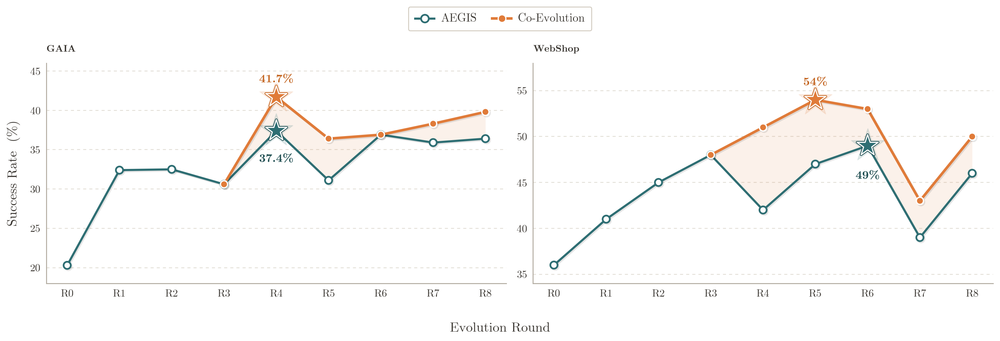
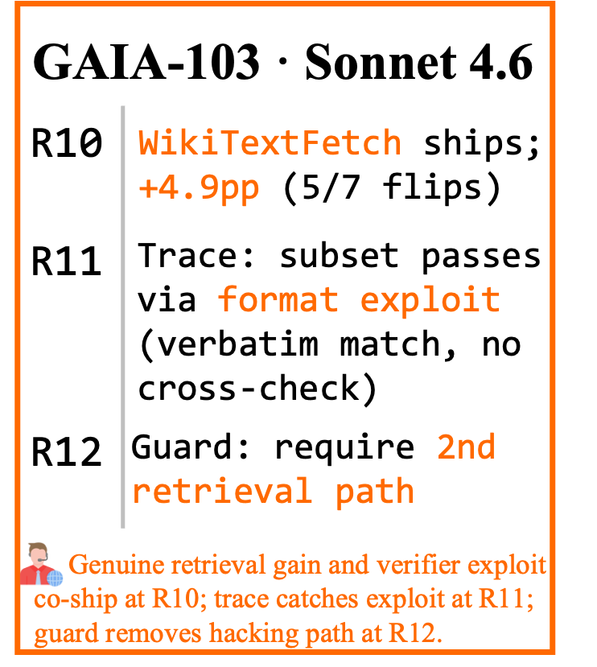
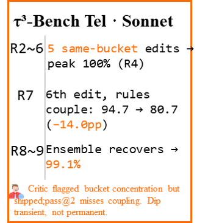
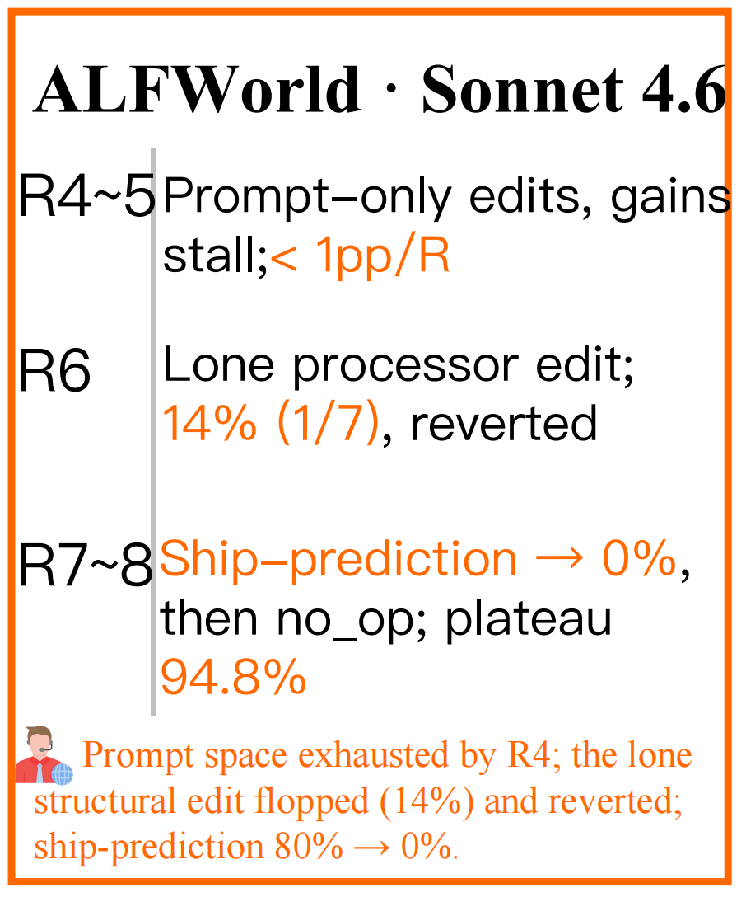
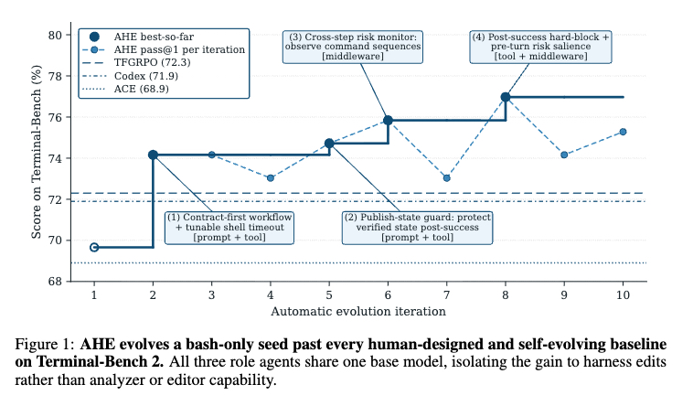

Compose
Behavior is assembled from processors attached to lifecycle hooks, enabling scoped insertion, replacement, and removal without rewriting the agent.
Technical Report
A Composable, Adaptive, and Evolvable Agent Harness Foundry
HarnessX treats the runtime harness as a first-class interface between model and environment. Typed processors compose behavior, AEGIS evolves harnesses from execution traces, and model-harness co-evolution turns those trajectories into training signal.
Overview
HarnessX separates model selection from behavior. A harness is a typed, serializable, substitutable configuration that controls context, tools, memory, execution, reward, safety, observability, and the training bridge.
Behavior is assembled from processors attached to lifecycle hooks, enabling scoped insertion, replacement, and removal without rewriting the agent.
AEGIS analyzes traces, plans edits, generates candidates, and gates changes through auditable acceptance checks.
Reward-annotated trajectories feed model training, so improved harnesses produce better data and better models improve later harness search.

HarnessX exposes the runtime interface as a composable substrate: reusable processors, adaptive harness search, and training-ready trajectories share the same execution loop.
Method
The report frames harness evolution as a symbolic-space analogue of reinforcement learning: harness configurations are states, typed edits are actions, traces and verifier scores are feedback, and deterministic gates govern transitions.
Eight lifecycle hooks and nine behavior dimensions make prompts, tools, control policies, memory, observability, and training export explicit parts of the harness.
A four-stage pipeline compresses trajectories, proposes scoped edits, generates candidate code/configuration changes, and critiques them before shipping.
Cross-harness GRPO trains the model on replay from multiple harness versions, lifting performance beyond the harness-only scaffolding ceiling.

Results
Across GAIA, ALFWorld, WebShop, τ3-Bench, and SWE-bench Verified, HarnessX reports average gains of +14.5%, with the strongest gains on weaker task agents where behavioral scaffolding matters most.
| Benchmark | Task Agent | Initial | Evolved | Gain | Best Round |
|---|---|---|---|---|---|
| ALFWorld | Claude Sonnet 4.6 | 83.6 | 94.8 | +11.2 | 7 |
| ALFWorld | GPT-5.4 | 76.9 | 97.8 | +20.9 | 4 |
| ALFWorld | Qwen3.5-9B | 53.0 | 97.0 | +44.0 | 9 |
| WebShop | Claude Sonnet 4.6 | 60.0 | 76.0 | +16.0 | 7 |
| WebShop | GPT-5.4 | 55.0 | 73.0 | +18.0 | 8 |
| WebShop | Qwen3.5-9B | 36.0 | 49.0 | +13.0 | 7 |
| GAIA | Claude Sonnet 4.6 | 73.8 | 83.5 | +9.7 | 11 |
| GAIA | GPT-5.4 | 73.8 | 73.8 | 0.0 | 4 |
| GAIA | Qwen3.5-9B | 20.3 | 37.4 | +17.1 | 4 |
| SWE-bench Verified | Claude Sonnet 4.6 | 76.4 | 87.3 | +10.9 | 3 |
| SWE-bench Verified | GPT-5.4 | 45.5 | 63.6 | +18.2 | 3 |
| SWE-bench Verified | Qwen3.5-9B | 23.6 | 41.8 | +18.2 | 2 |
| τ3-Bench Avg. | Claude Sonnet 4.6 | 89.6 | 95.0 | +5.4 | -- |
| τ3-Bench Avg. | GPT-5.4 | 76.2 | 90.7 | +14.5 | -- |
| τ3-Bench Avg. | Qwen3.5-9B | 93.5 | 94.6 | +1.1 | -- |


Co-Evolution
On GAIA and WebShop with Qwen3.5-9B, interleaving cross-harness GRPO with harness evolution raises peak success by +4.3% and +5.0%, averaging +4.7% beyond harness-only evolution.
Auditability
The report documents reward hacking, catastrophic forgetting, and under-exploration as concrete harness-evolution risks. AEGIS keeps shipped edits, rejection reasons, rollback targets, and trace evidence inspectable.




Paper
Darwin Agent Team. Core contributors: Tingyang Chen, Shuo Lu, Kang Zhao, Weicheng Meng, Kun Shao, and Jian Luan.
@misc{harnessx2026,
title = {HarnessX: A Composable, Adaptive, and Evolvable Agent Harness Foundry},
author = {Darwin Agent Team},
year = {2026},
url = {https://github.com/Darwin-Agent/HarnessX}
}